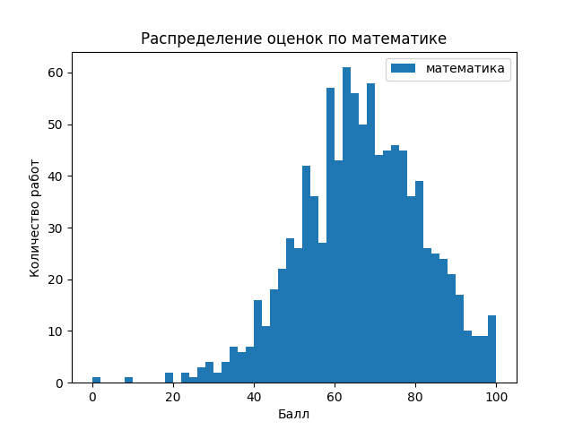
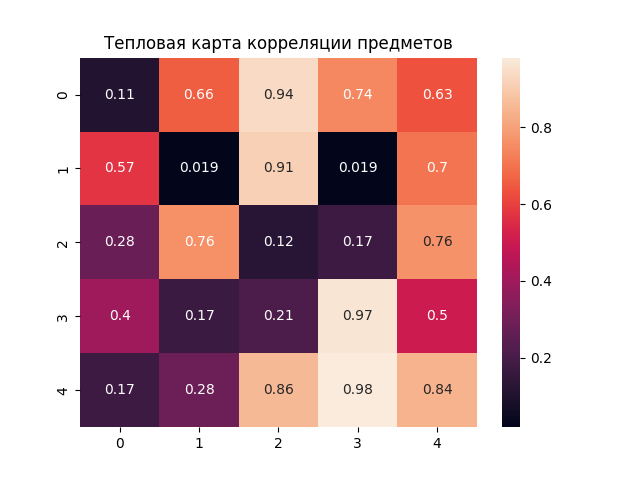
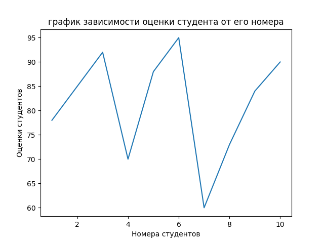
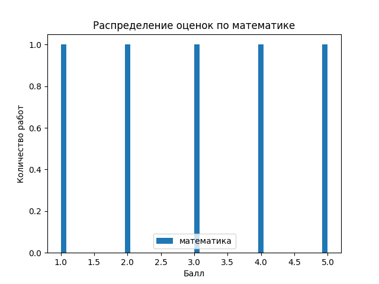
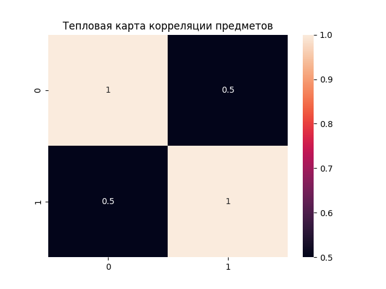
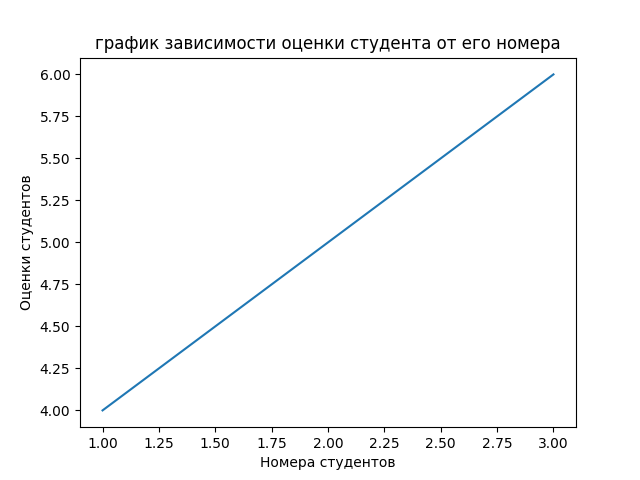

Лабораторная работа №2: Основы NumPy: массивы и векторные операции
Структура проекта:
numpy_lab/
├── main.py # Реализация функций
├── test.py # Юнит-тесты на pytest
├── data/ # Исходные данные
│ └── students_scores.csv
│ └── StudentsPerformance.csv
└── plots/ # Папка для сохранения графиков
Реализованные функции
1. Работа с массивами: создание, преобразование, базовые операции
create_vector: Создать вектор [0, 1, ..., 9].
create_matrix: Создать матрицу 5×5 со случайными числами.
reshape_vector: Преобразовать (10,) → (2, 5).
transpose_matrix: Реализовать транспонирование матрицы.
Реализация:
def create_vector() -> np.ndarray:
return np.arange(0, 10)
def create_matrix() -> np.ndarray:
return np.random.rand(5, 5)
def reshape_vector(vec: np.ndarray) -> np.ndarray:
return vec.reshape(2, 5)
def transpose_matrix(mat: np.ndarray) -> np.ndarray:
return np.transpose(mat)
2. Векторные операции
vector_add: Реализовать сложение векторов одинаковой длины
scalar_multiply: Реализовать умножение вектора на число
elementwise_multiply: Реализовать поэлементное умножение
dot_product: Реализовать скалярное произведение
Реализация:
def vector_add(a: np.ndarray, b: np.ndarray) -> np.ndarray:
return a + b
def scalar_multiply(vec: np.ndarray, scalar: int | float) -> np.ndarray:
return vec * scalar
def elementwise_multiply(a: np.ndarray, b: np.ndarray) -> np.ndarray:
return a * b
def dot_product(a: np.ndarray, b: np.ndarray) -> int | float:
return np.dot(a, b)
3. Матричные операции
matrix_multiply: Реализовать умножение матриц.
matrix_determinant: Реализовать нахождение определителя матрицы.
matrix_inverse: Реализовать нахождение обратной матрицы.
solve_linear_system: Реализовать решение линейной системы.
Реализация:
def matrix_multiply(a: np.ndarray, b: np.ndarray) -> np.ndarray:
return np.matmul(a, b)
def matrix_determinant(a: np.ndarray) -> float:
return np.linalg.det(a)
def matrix_inverse(a: np.ndarray) -> np.ndarray:
return np.linalg.inv(a)
def solve_linear_system(a: np.ndarray, b: np.ndarray) -> np.ndarray:
return np.linalg.solve(a, b)
4. Статистический анализ
load_dataset: Загрузить CSV и вернуть NumPy массив.
statistical_analysis: Используя данные, нужно оценить: средний балл, медиану, стандартное отклонение, минимум, максимум, 25 и 75 перцентили.
normalize_data: Реализовать Min-Max нормализацию.
Реализация:
def load_dataset(path: str ="data/students_scores.csv") -> np.ndarray:
return pd.read_csv(path).to_numpy()
def statistical_analysis(data: np.ndarray) -> dict:
stats = {}
mean = np.mean(data)
median = np.median(data)
std = np.std(data)
minimum = np.min(data)
maximum = np.max(data)
percentile_25 = np.percentile(data, 25)
percentile_75 = np.percentile(data, 75)
stats.update({"mean": mean, "median": median, "std": std, "min": minimum, "max": maximum,
"percentile_25": percentile_25, "percentile_75": percentile_75})
return stats
def normalize_data(data: np.ndarray) -> np.ndarray:
minimum = np.min(data)
maximum = np.max(data)
normalized_data = (data - minimum) / (maximum - minimum)
return normalized_data
5. Визуализация данных
plot_histogram: Построить гистограмму распределения оценок по математике.
plot_heatmap: Построить тепловую карту корреляции предметов.
plot_line: Построить график зависимости: студент -> оценка по математике.
Реализация:
def plot_histogram(data: np.ndarray) -> None:
plt.hist(data, bins=50, label="математика")
plt.title("Распределение оценок по математике")
plt.xlabel("Балл")
plt.ylabel("Количество работ")
plt.legend()
plt.savefig("plots/histogram.png")
plt.show()
def plot_heatmap(matrix: np.ndarray) -> None:
sns.heatmap(matrix, annot=True)
plt.title("Тепловая карта корреляции предметов")
plt.savefig("plots/heatmap.png")
plt.show()
def plot_line(x: np.ndarray, y: np.ndarray) -> None:
plt.plot(x, y)
plt.title("график зависимости оценки студента от его номера")
plt.xlabel("Номера студентов")
plt.ylabel("Оценки студентов")
plt.savefig("plots/line.png")
plt.show()
Результаты построения графиков:



Результаты тестирования:
=============================================================================== test session starts ===============================================================================
platform win32 -- Python 3.13.9, pytest-9.0.2, pluggy-1.6.0 -- C:\Users\User\Documents\GitHub\igninsan.github.io\.venv\Scripts\python.exe
cachedir: .pytest_cache
rootdir: C:\Users\User\Documents\GitHub\igninsan.github.io\code\numpy_lab
collected 17 items
test.py::test_create_vector PASSED [ 5%]
test.py::test_create_matrix PASSED [ 11%]
test.py::test_reshape_vector PASSED [ 17%]
test.py::test_vector_add PASSED [ 23%]
test.py::test_scalar_multiply PASSED [ 29%]
test.py::test_elementwise_multiply PASSED [ 35%]
test.py::test_dot_product PASSED [ 41%]
test.py::test_matrix_multiply PASSED [ 47%]
test.py::test_matrix_determinant PASSED [ 52%]
test.py::test_matrix_inverse PASSED [ 58%]
test.py::test_solve_linear_system PASSED [ 64%]
test.py::test_load_dataset PASSED [ 70%]
test.py::test_statistical_analysis PASSED [ 76%]
test.py::test_normalization PASSED [ 82%]
test.py::test_plot_histogram PASSED [ 88%]
test.py::test_plot_heatmap PASSED [ 94%]
test.py::test_plot_line PASSED [100%]
=============================================================================== 17 passed in 3.91s ================================================================================
Графики, полученные во время тестов:



Выводы:
В ходе выполнения лабораторной работы:
- Освоены основы работы с библиотекой NumPy и построения графиков с помощью matplotlib и seaborn.
- Реализованы операции с векторами и матрицами.